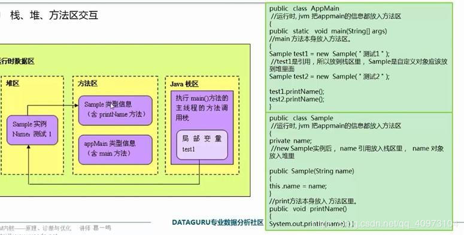

首先要知道jvm是由五大部分组成，分别是类装载子系统，运行时数据区，执行引擎，本地方法接口和内存回收机制
先是类装载子系统，它把所有引用到的类，接口以及包一起装载到文件下
然后是最重要的运行时数据区
：JVM由主方法入口执行程序，并将主方法压入java栈，并生成该方法相应的栈桢，然后由程序计数器提供的指令来一步步执行
：执行中遇到调用java方法则将其压入java栈中，遇到变量赋值，就存储在局部变量表中，遇到表达式，则用操作数栈来进行运算，并将结果弹出栈返回，遇到调用其它类时，就用动态链接，遇到本地方法则调用本地方法栈，遇到常量对象时，将其分配到运行时常量池中，遇到实例化对象时，先获取方法区中的类信息，然后在堆当中给其分配相应的空间
：堆当中，根据流行的分代GC算法，可以将其分为两部分：新生代和老年代
：新生代又分为Eden，s1，s2，其中新对象一般都分配在Eden中，当Eden内存不足时，会触发MinorGC（清完无用对象后，把Eden和s1中幸存的对象复制到s2，s2放不下就放老年代，再清空二者，最后s1和s2互换），对象在s区中每度过一次GC年龄加1，到指定值时放入老年代（默认15岁）
：老年代相对稳定，它在内存不足或无法给大对象分配连续空间时会触发Major GC（用标记-整理算法来清理内存，速度相对缓慢），当老年代内存还是不足时，会抛出outofmemory异常
：永久代是用来存放clss和元数据的信息，且GC 不会在主程序运行期对永久区域进行清理
